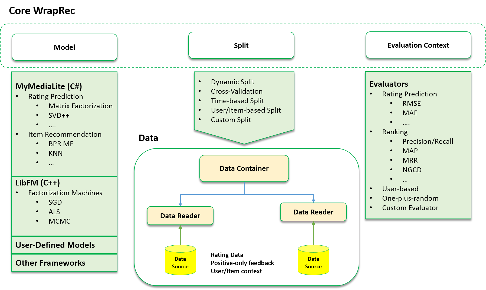

Overview
WrapRec is an open-source project, developed with C# which aims to simplify the evaluation of Recommender System algorithms. WrapRec is a configuration-based tool. All desing choices and parameters should be defined in a configuration file.
The easiest way to use WrapRec is to download the latest release, specify the details of experiments that you want to perform within a configuration file and run the WrapRec executable.
Get Started with a "Hello MovieLens" Example
MovieLens is one of the most widely-used benchmark datasets in Recommeder Systems research. Start to use WrapRec with a simple train-and-test scenario using the 100K version of this dataset.
To run the example Download the
Hello MovieLens exmaple
and extract it in the same folder that contains WrapRec executable. Run the example by the following command.
In Windows, you should have .Net Framework,
and in Linux and Mac you should have .Net Mono installed to run WrapRec.
Windows
wraprec.exe sample.xml
Linux and Mac
mono wraprec.exe sample.xml
The example performs four simple experiment with MoviLens 100K dataset. The result of experiments will be stored
in a folder results with csv format. Check WrapRec Outputs to understand
more about the restuls and outputs of WrapRec.
You can start your experiments by modifying the sample configuration file. The configuration file is rather intuitive and easy to understand. Check Configuration section to undrestand the format of the configuration file in WrapRec.
WrapRec Architecture
WrapRec is designed based on the idea that for any evaluation experiment for Recommender Systems (and generally in Machine Learning), three main components should be present
- Model
- Defines the algorithm that is used to train and evalute Recommender System
- Split
- Specifies the data sources and how the data should be splitted for training and evaluation
- Evaluation
Context - Defines a set of evaluators to evaluate a trained model
The overal architecture of WrapRec is summerized in the Figure below. WrapRec is not about implementation of
actual algorithms for recommender systems. Instead, it provides functionalities to easily wrap exisiting algorithms
into framework, to be able to perform extensive evaluation experiments in single framework.

Building Blocks in WrapRec
To perform an evaluation experiment with WrapRec, three main building blocks are required.Model
Defines the algorithm that is used to train and evalute Recommender System
Currently WrapRec is able to wrap algorithms from two Recommender System toolkits: MyMediLite and LibFm. You can also plug your own algorithm to this framework. Check How to Extend WrapRec to learn how to extend WrapRec with your own algorithm or third party implementations.
Split
Specifies the data sources and how the data should be splitted for training and evaluation
In WrapRec data will be loaded through DataReader components. You can define in the configuration file
what is the input data, what is the format and how it should be loaded.
The data will be store in a DataContainer object.
An Split defines, how the data in DataContainer can be splited for training and evaluation.
WrapRec supports several splitting methods such as static, dynamic and Cross-Validation.
Evaluation Context
Defines a set of evaluators to evaluate a trained model
Evaluation Context is a component is WrapRec that consists of several Evaluators and store the results
of evaluations that are done with Evaluator objects.
Configuration File
In WrapRec all the settings and desing choices are defined in a configuration file.
The overal format of the configuration file is defined as follow.
- Components in the configuration file are loaded via Reflection and the parameters are dynamic. It means that you can specify the type of class and its properties and WrapRec creates the objects during runtime.
- Parameters can have multiple values. WrapRec detects all parameters with multiple values and run multiple experiments, as many times and the catesian product of all parameters.
- The three main components of an experiments (Model, Split and Evaluation Context) should be defined in the configuration file.
Extending WrapRec
To be completed.